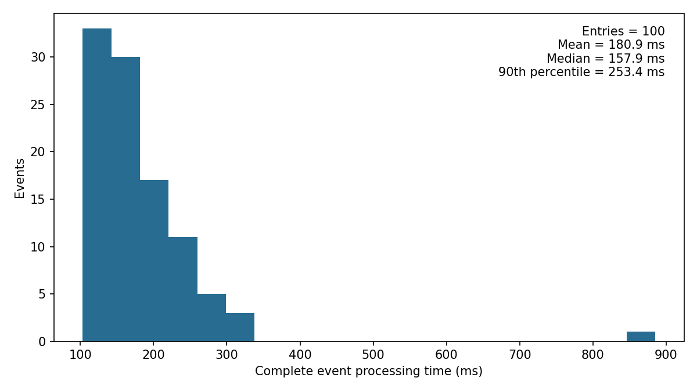

Event analysisReadout timing: 100 bb0nu events
- TopMetal pitch: 3 mm; time buckets: 20 ms. SiPM pitch: 4 mm; time buckets: 250 ns.
- Xe–15% He; frame margin: 20 mm; electron lifetime: 30 ms.
- SiPM calculation: 64 intervals, fully recovered initial state. The limit of 16 avalanches is a computational choice.
- One warm-up event, followed by 100 accepted events. One CPU thread for BLAS. All channels in the frame include noise.
- Event numbers, positions and frames come from the saved fast-trigger selection. This benchmark starts by reading accepted-event hits; it does not repeat sample selection.
Time per event
| Stage | Mean (ms) | Median (ms) | 90th percentile (ms) |
|---|
| Input and frame selection | 0.707 | 0.721 | 0.797 |
| Detector simulation | 9.264 | 8.473 | 9.797 |
| CSA + ADC, including preparation | 97.958 | 84.364 | 122.574 |
| SiPM + ASIC | 47.324 | 41.404 | 57.622 |
| Ion reconstruction, including preparation | 24.156 | 17.506 | 31.326 |
| SiPM reconstruction and rebinning | 1.484 | 0.600 | 1.003 |
| Other event operations | 0.006 | 0.006 | 0.007 |
| Complete event | 180.897 | 157.861 | 253.381 |
Total event processing: 18.09 s. First 50 events: 189.6 ms/event; last 50: 172.2 ms/event. Memory cleanup is included in these times (21.7 ms/event on average).

Calculation details
- Ion detector simulation: 2.717 ms/event.
- Electron detector simulation: 6.504 ms/event.
- Pair counts and detector settings: 0.042 ms/event.
- CSA settings preparation: 5.455 ms/event.
- CSA + ADC calculation: 92.504 ms/event.
- Ion reconstruction preparation: 11.857 ms/event.
- Ion reconstruction calculation: 12.299 ms/event.
- SiPM reconstruction: 1.258 ms/event.
- Electron rebinning: 0.226 ms/event.
Run preparation
- Source checksum and saved event selection: 0.372 s.
- Common electronics preparation: 0.864 s.
- Warm-up event, including first-call compilation: 1.812 s.
- Elapsed from script start to summary-file writing: 29.47 s, including module loading and compilation. Julia process startup and report generation are additional.
Checks and output
- Nonlinear reconstructed pad vectors: 232.
- Pad vectors flagged as not converged: 0.
- Invalid rebinned PE cells: 4.
- Detector vectors, ADC vectors and reconstructed vectors remain in memory. No zero suppression or event-file writing is timed.
- Noise accuracy validation remains a separate study.
Numerical results: controls.h5.